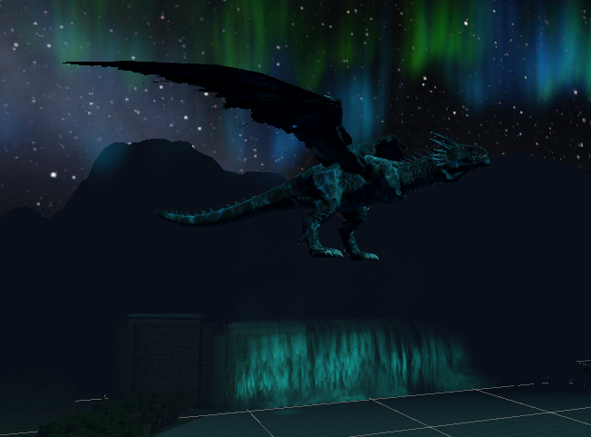
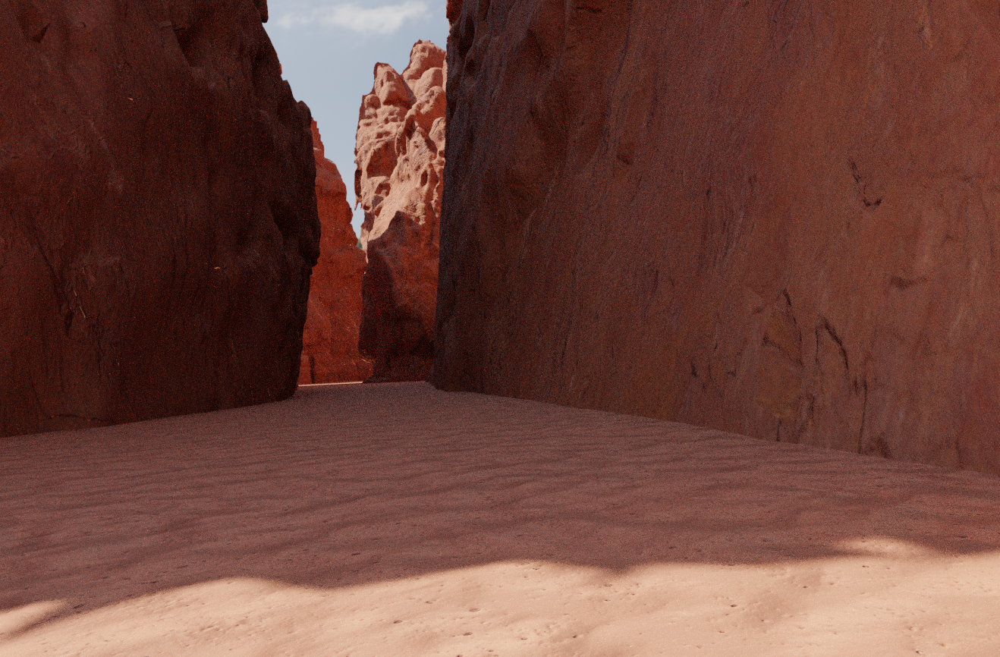

-
Introduction
Emotion-inducing Virtual Reality (VR) applications are used for diverse purposes, including exposure therapy, psychotherapy, studying human beahviour, and enhancing social skills. An area with limited research, but growing interest, is the use of VR to elicit awe. Research suggests awe can lead to transformative changes in physical and psychological aspects, offering benefits such as improved wellness, increased social interaction and environmental consciousness. However, financial and physical constraints limit access to awe-inspiring experiences.

Goals
The goal of this project was to successfully evoke awe in the users using Virtual Reality. Three VR Environments were designed, each incorporating different awe elicitors, to test the effectiveness of awe elicitation in VR through distinct themes that are commonly associated with awe. Uniques environments were chosen to assess the successfulness of different awe-inducing environments in VR. As this was a experimental design project, these three VREs can be used as a basis for future research into the artificial replication of awe experiences. All three VEs were developed de novo.
User Tests
Participants, who were recruited from UCT, were monitored for physiological measures of awe, including heart rate (HR) and respiration rate (RR), both at a baseline tutorial VE, and during immersion.
Post-immersion measures for subjective experience of awe included the Awe-Scale Questionnaire as well as a Likert Scale Questionnaire to rate their extent of the listed emotions experienced. These self-report measures were completed before a final debriefing which concluded the user experiment.
-
Abstract
Awe is a complex emotion with many elicitors and has shown to have many positive effects on a person. Some of the positive effects that awe can have on people include increasing a person’s satisfaction with life, altering a person’s perspective and worldview as well as influencing people’s beliefs as it drives people toward spirituality, This project is an experimental design of awe elicitation in Virtual Reality. A fantasy virtual environment was designed to elicit the feeling of awe in the user using various features and elements that were determined as likely awe elicitors. These included supernatural creatures, northern lights and bioluminescence. A user experiment was conducted whereby 10 participants took part and they interacted with both a tutorial environment and fantasy environment. The fantasy environment was compared against the tutorial environment and was determined to be successful in the elicitation of awe in the user.
Fantasy Environment
The supernatural and natural phenomena were identified as likely elicitors of awe. This inspired the idea of a fantasy forest environment to be designed where the user could step into a world which is completely fictional and one they could never experience in real life. The immersive ability and sense of ‘Presence’ VR provides allows this seemingly impossible environment to feel completely real to the user, increasing its chances of evoking awe from features that many would find difficult to grasp due to its supernatural nature. The primary features chosen to elicit awe included the northern lights, dragons and bioluminescence. The bioluminescence was ascertained through a glowing waterfall, a bioluminescent rhinoceros as well as glowing rocks and mushrooms. A fantasy audio was also included in the VR environment to enhance the mystical feel of the fantasy world the users explored.
Experiment
A user study of (n=10) participants took part in the experiment. Biosensors were placed on the upper body of each participant to capture physiological results and a basic presence, emotion five-point likert scale and Awe Experience Scale questionnaires comprised the self report results. Each participant spent around 5 minutes in the tutorial environment which also acted as the baseline for the physiological and self-report results. The participants then answered all three self-report questionnaires. The participants were then immersed into the fantasy virtual environment where they were able to explore for 5 to 10 minutes. After this, the participants answered the same questionnaires before the biosensors were removed, the particpants were compensated and thanked for their time.
Results
The results were all normally distributed and t-tests were used to obtain significance values.
Physiological Results
Two significant physiological results were obtained which indicated lower heart rate and higher T-wave amplitudes for the fantasy environment compared to the tutorial environment. T-wave amplitude is associated with sympathetic nervous system activity (SNS). Greater t-wave amplitudes indicate lower SNS activity which is an indicator for awe along with a lowered heart rate.

Self-Report Results
The self-report results indicated a higher sense of ‘Presence’ and higher awe levels experienced by the user in the fantasy environment compared to the tutorial environment.
Awe results from Likert Scale Questionnaire
Awe Experience Scale Questionnaire
Conclusions
1) This experimental design was successful in the elicitation of awe. The environment chosen incorporated useful awe-elicitors to achieve this result.
2) The increased sense of ‘Presence’ also impacted the extent to which the feeling of awe was evoked in the participants.
3) Future research can use this study as a basis and can expand upon this design, incorporating more and different awe-elicitors and using a larger participant base. Future research can also study how different senses influence awe, other than solely relying on sight and sound.
-
Design
When designing an environment to induce awe using ancient architecture like Petra, there are several key points in the model that must be considered before the actual development. These include how realistic we want the model to be, the trade-off between quality and frame rate, and how are we going to induce awe in the users. The model must ensure that the design respects and represents the ancient architecture of Petra.
Why Petra
Petra, often referred to as the ‘Rose City’ due to its pink appearance of its sandstone cliff, and was well known for its spectacular tombs, monuments, and houses that was carved into sandstone cliffs.
For past centuries, the lost city was little known in the western world due to the limitations of technology and how information travels. Today, many have read and seen pictures of this magnificent architecture, but few have experienced it in person. Through this VR project, we aim to build a model of Petra, allowing users to experience Petra as they are in person and enabling them to immerse themselves into this truly awe-inspiring experience.
Trigger. The primary focus of the environment was creating a awe-inducing environment. To induce awe in participants, the environment is mainly designed around 2 inducing elements, immense size and quality in details, which was proven to be effective by studies around the world.


Scaling wonder. One of the unique features of Petra is its mix of grand structure and small, intricate carvings. From vast structures like the Bab Ai Siq to the tiny details on the sculptures on the treasury building. This model will ensure that users can experience both the grandeur and the detailed artistry that defines Petra.

Experiment and Results
In the user study (n=10)), we tested whether grand ancient architecture like Petra has an effect on awe elicitation in a virtual environment. All participants went through the same process from the tutorial to the completion of the virtual environment. The tutorial is 5 minutes long with the main environment being 10 minutes. The participants are allowed to end the tutorial and main environment early if they want to.
There are two measurements taken during the experiment, objective measures such as heart rate (HR), respiratory rate (RR) and Respiratory Sinus Arrhythmia (RSA) and subjective measures being the survey participants took before the experiment and questionnaires after conducted the experiment. The objective analysis was calculated by taking the average HR, RR, and SCL after 3 minutes of the immersion until the end of it, removing the possibility of measuring the awe effect from the VR experience rather than the environment.
The objective results reviewed minor different between the HR and RR, which can be negligible. However, RSA showed that the Petra VE do have an effect that could be awe on participants. The sample size is too small make definitive claims.The subjective measures did show that participants experienced awe in the experiments, followed by amusement and joy. The scores for questions that is linked to awe emotion score mostly within the medium high to high spectrum (7+/10).
Conclusions
The environment made can be considered successful in eliciting awe due to positive result for RSA and subjective measure. However, we cannot make a conclusive station about this project due to limitation in sample size and objective measures (n=10). More testing and validations are required to make the results be significant to make a definitive claim that participants experienced awe during the experiment.
Abstract
This user study (n=10) serves as a pilot investigation into a solution to inducing awe in a virtual environment, with the aim of assisting further research into the emotion and contributing to psychotherapy and the rehabilitation process of depression. The immersive environment comprises a range of known awe-inducing factors all encapsulated in a mountainous scene. Vast mountain landscapes viewed from high above, closeup steep cliffs, real-world audio, and intricate detail were all incorporated into the simulated environment to create an immersive scene. The built scene was tested against a control environment which induced no emotion. As anticipated, the findings demonstrated that the awe-inducing virtual environment elicited higher levels of awe and presence than the control VE. These results affirm the immersive potential of VR in generating awe and offer valuable insights for crafting awe-inspiring virtual environments.
Virtual Environment
The final VE used for the user study is a mountain scene where the user is positioned high up the mountain.
The VE is inspired by China's renowned Mount Huashan, celebrated for its breathtaking natural beauty and captivating, awe-inspiring trails. In the VE, users can walk along the mountainside, with a steep cliff on one side and expansive mountain views on the other, aiming to evoke awe through its elevated and vast setting.
The development of the project was the second iteration whereby an agile approach was implemented as follows:
Results
Physiological Results
The physiological results indicate lower respiration rate and significantly higher heart rate in the mountain VE, which are associated with threat-based awe. This is summarised below:


Self-Report Results
The self-reported results indicate that significantly higher awe was induced in mountain VE. This is summarised below:
Emotion Questionnaire

Awe-Scale Questionnaire
Conclusions
1) The results of the user study largely indicate that higher levels of awe were experienced in the mountain VE compared to the control VE.
2) Future studies can enhance the robustness of these findings by conducting a similar experiment with increased control measures. We suggest a larger participant pool, an improved training setup or blocking of subjects to mitigate the impact of lack of VR experience, and a small camera to record goosebumps to develop a more comprehensive understanding of the emotion.


{kind=link}